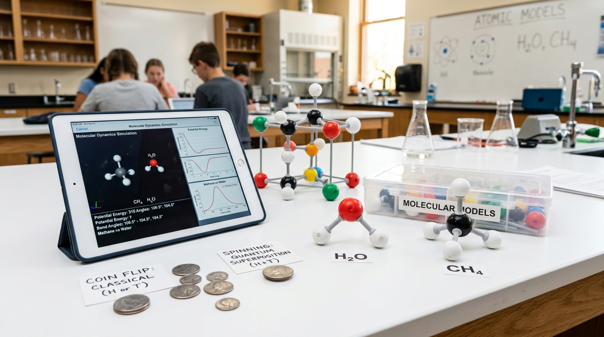
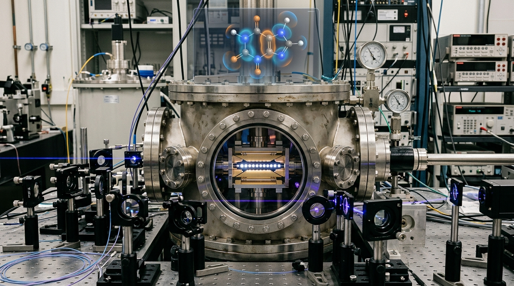
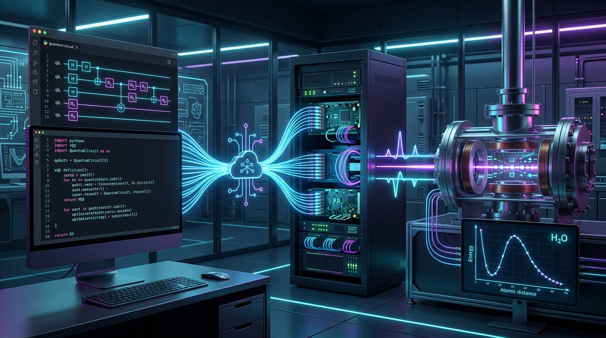

1장. 슈퍼컴퓨터도 무릎 꿇은 분자의 미시세계: 지수 폭발
원자 몇 개만 늘어나도 계산량이 우주 전체 원자 수를 뛰어넘는 이유
화학 분자의 세계에서도 전자가 1개 늘어날 때마다 계산해야 하는 양자 상태 수가 2배씩 급증합니다. 이를 '지수 폭발(Exponential Explosion, 2ᴺ)'이라 부릅니다.
커피 한 잔 속 카페인 분자(전자 102개)의 계산 조합은 약 10³⁰가지로 지구상의 모든 모래알 수(10²³)를 능가하며, 페니실린 분자는 10⁸⁴가지로 전 우주의 원자 수(10⁸⁰개)를 초과합니다.
이 때문에 기존 슈퍼컴퓨터로는 분자의 화학 반응을 계산하는 데 우주의 나이만큼의 시간이 걸려 한계에 부딪혔습니다.

변수(전자 수)가 1개씩 추가될 때마다 연산해야 할 상태 수가 2배, 4배, 8배로 급증하는 현상입니다.
여러 입자가 서로에게 동시에 힘을 미칠 때, 그 미시적 상호작용을 고전 수치해석으로 풀어내기 어려운 문제입니다.
2장. 0과 1이 동시에 춤추는 마법: 동전 팽이와 양자 큐비트
책상 위 팽이처럼 회전하며 모든 경우의 수를 동시에 탐색하다
일반 컴퓨터는 전등 스위치처럼 0 또는 1 중 하나만 저장하는 '비트(Bit)'를 씁니다. 책상 위에 누워 있는 동전(앞면 또는 뒷면)과 같습니다.
반면 양자 컴퓨터의 '큐비트(Qubit)'는 팽이처럼 빠르게 회전하는 동전과 같아서, 0과 1의 확률을 동시에 지니는 '중첩(Superposition)' 상태로 동작합니다.
N개의 큐비트는 2ᴺ개의 상태를 동시에 표현하므로, 미로의 수많은 갈림길을 한 번에 탐색하여 분자 계산 시간을 기하급수적으로 단축합니다.

0 또는 1만 표현 가능한 고전 정보 단위(비트)와, 0과 1의 중첩 상태를 가지는 양자 정보 단위(큐비트)입니다.
측정하기 전까지 입자가 여러 상태의 확률을 동시에 머금고 존재하는 양자역학적 특성입니다.
3장. 환상의 2인 3각 달리기: VQE 알고리즘과 골짜기 바닥 상태
양자 컴퓨터와 슈퍼컴퓨터가 손을 잡고 가장 안정한 분자 모양을 찾아가다
분자의 최저 에너지를 찾는 핵심 기법이 바로 'VQE(변분 양자 고유값 계산기)'입니다. 양자 컴퓨터와 고전 컴퓨터가 2인 3각 달리기처럼 협업합니다:
- 양자 컴퓨터: 큐비트 중첩을 이용해 복잡한 전자 에너지 상태를 순식간에 계산해 전달합니다.
- 고전 컴퓨터: 전달받은 에너지 값을 보고 원자 간 결합 거리를 미세 보정합니다.
이 피드백 루프를 반복하여 실제 이온 트랩 양자 컴퓨터로 분자의 결합 에너지와 바닥 상태를 정밀하게 예측합니다.

분자 속 전자들이 에너지를 가장 낮게 소모하며 가장 안정하게 결합해 있는 상태입니다.
양자 프로세서의 고속 에너지 측정과 고전 컴퓨터의 수치 최적화를 결합한 하이브리드 알고리즘입니다.
4장. 비커 없는 미래 실험실과 틴에이저 양자 화학 스타트업
컴퓨터 속 양자 시뮬레이션으로 기후 위기와 난치병 치료제를 디자인하다
양자 계산 화학은 3대 인류 난제를 해결할 혁신적 열쇠입니다:
- 친환경 상온 비료: 상온에서 질소를 고정하는 인공 촉매 분자를 계산하여 막대한 탄소 배출을 줄입니다.
- 전고체 배터리: 화재 위험 없이 초고속 충전이 가능한 차세대 고체 전해질 분자를 가상 설계합니다.
- 맞춤형 표적 신약: 바이러스 단백질 결합 구조를 초정밀 분석하여 치료제 분자를 신속히 스크리닝합니다.
파이썬 코드와 양자 알고리즘을 통해 컴퓨터 모니터 앞에서 지구를 구하는 미래 분자 디자이너로 활약할 수 있습니다.

실제 시약 대신 양자역학 방정식과 컴퓨터 시뮬레이션으로 분자의 성질과 화학 반응을 예측하는 분야입니다.
공기 중 질소를 상온·상압에서 암모니아 비료로 변환하여 온실가스를 감축할 수 있는 친환경 인공 촉매입니다.